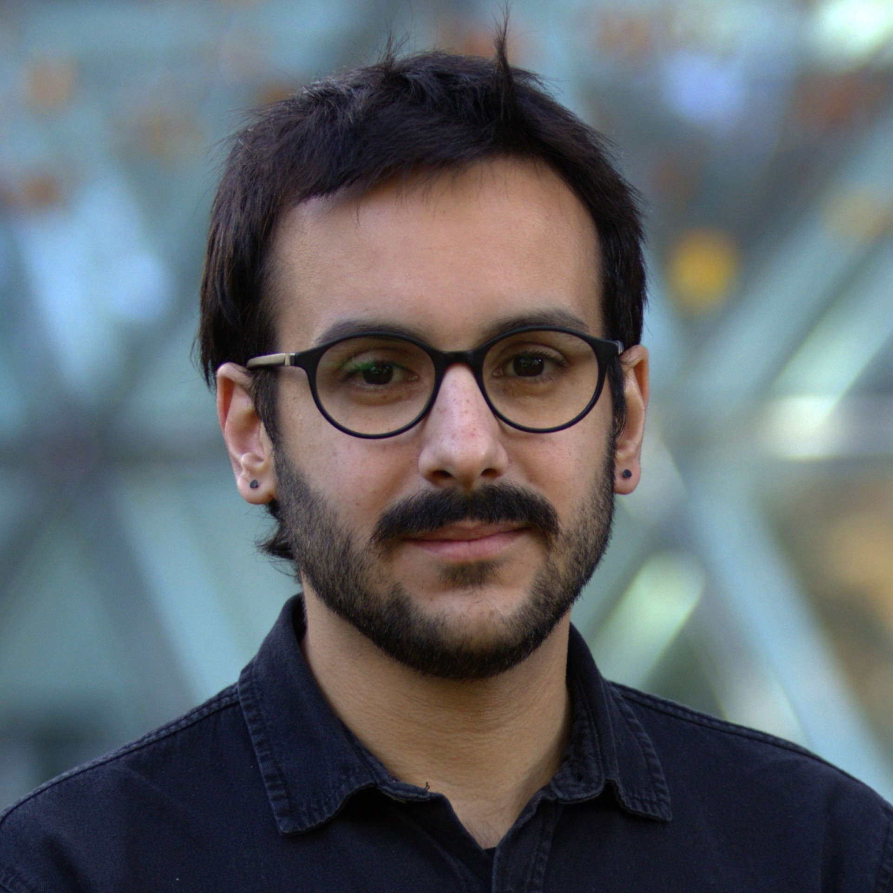

AI ethics researcher · Award-winning journalist
Raphael Hernandes
Journalism and research on the systems that shape what people get to know.
PhD candidate at Cambridge Digital Humanities, researching how AI impacts journalism, information environments, and mediation. The questions come from over a decade of reporting at places like Folha de S.Paulo and the Guardian.

-
European Press Prize
Laureate — 2026 shortlist, Innovation category, for an investigation into far-right radicalisation on Facebook
-
Huw Price Prize
Best overall performance, Cambridge MPhil in Ethics of AI, Data, and Algorithms
-
Harding Scholar
Work funded by a Harding Distinguished Postgraduate Scholarship, University of Cambridge
Explore
- About The longer version: how reporting and research connect.
- Research Publications on AI, journalism, and information integrity.
- Journalism Selected reporting and investigations.
- Speaking & public engagement Keynotes, panels, workshops, and training.
- Recognition & press Awards, honours, and media coverage.
Enquiries
Speaking & advisory enquiries
For keynotes, panels, workshops, training, or advisory work — in English or Portuguese — email me with dates, audience, and format.
Email hello@raphaelhernandes.com
Or reach me on LinkedIn.